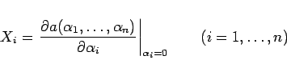

Inhalt Index DeskTop Bronstein

 Algebra und Diskrete Mathematik Klassische algebraische Strukturen Lie-Gruppen
Algebra und Diskrete Mathematik Klassische algebraische Strukturen Lie-Gruppen


Dieses Vorgehen entspricht der Linearisierung jedes Gruppenelements  in einer infinitesimalen Umgebung des neutralen Elements:
in einer infinitesimalen Umgebung des neutralen Elements:
Die Elemente (5.135a) bilden die lokale LIE-Gruppe in der Umgebung des neutralen Elements. Die partiellen Ableitungen Xi
|  | (5.135b) |
sind die infinitesimalen Generatoren der LIE-Gruppe. Die Anzahl der infinitesimalen Generatoren ist gleich der Dimension (Ordnung) der LIE-Gruppe  .
.
Die Tabelle Klassische Lie-Gruppen und Lie-Algebren gibt eine Übersicht über die klassischen LIE-Gruppen, die für naturwissenschaftliche Anwendungen der Gruppentheorie von Bedeutung sind.